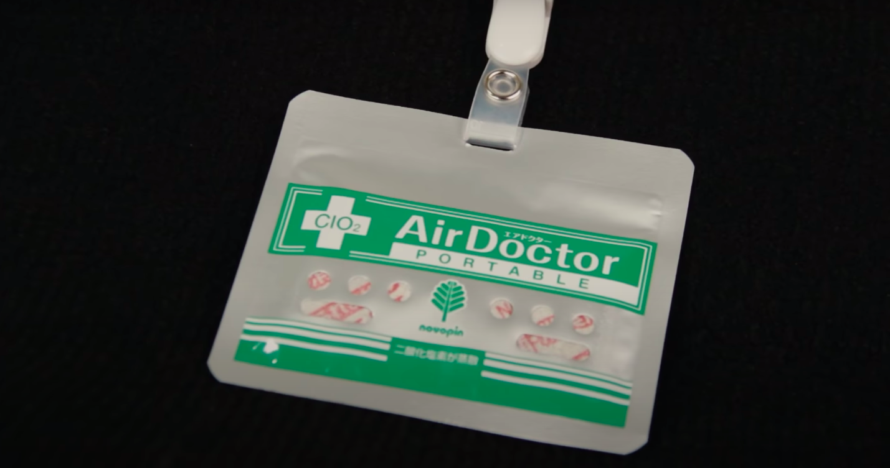
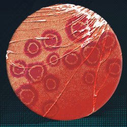
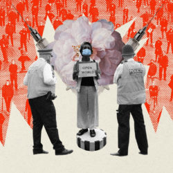
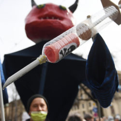

Инфодемия: травяной чай от коронавируса и немного советов психолога

Президент Бразилии Жаир Болсонару публично раскритиковал нового министра здравоохранения Нельсона Тейча (прошлого министра президент уволил за просьбы соблюдать социальную дистанцию и изолироваться дома).
Тейч призвал с осторожностью отнестись к хлорохину — экспериментальному лекарству, эффективность которого еще не доказана в борьбе с коронавирусом — и предупредил о его побочных эффектах.
Президент Мадагаскара Андри Радзуэлина предъявил претензии Всемирной организации здравоохранения, потому что она не признала эффективным травяной чай, который президент уже несколько недель продвигает в качестве лекарства от коронавируса.
В интервью французскому каналу France24 президент Мадагаскара обвинил ВОЗ в расизме: '
Если бы лекарство Covid-органик изобрели не в Мадагаскаре, а в европейской стране, было бы в таком случае столько сомнений?Не думаю… '.
ВОЗ после этого сообщила, что поддержит проведение научных исследований лечебных свойств чая, а генеральный директор организации встретится с Радзуэлина.
Тем временем еще одно сомнительное средство от Covid-19 оказалось неэффективным.
За последний месяц сразу несколько политиков были замечены на публике с необычным бейджем 'Air Doctor'.В их числе был и пресс-секретарь президента России Дмитрий Песков — до того, как его госпитализировали с коронавирусом.
Журналистка Coda Изобель Кокерелл поговорила с учеными и выяснила, как работает лечебный бейдж и может ли он спасти от заражения Covid-19.
Производители пишут, что бейдж, в котором содержится диоксид хлора, дезинфицирует воздух вокруг.
В апреле Управление по санитарному надзору за качеством пищевых продуктов и медикаментов США (FDA) предупредило, что использование продуктов, содержащих диоксид хлора, опасно, так как этот препарат является 'сильнодействующим отбеливающим средством, которое уже вызывало серьезные и потенциально опасные для жизни последствия'.
Официальный представитель компании-производителя на Ближнем Востоке, доктор Али Хабиб заявил, что предупреждение FDA не имеет никакого отношения к бейджу. '
Многие политики носят наш продукт, но мы не продвигаем их и не просим их носить его ', — сказал он.
Хабиб также сказал, что Air Doctor не является '
ни медицинским прибором, ни фармацевтическим продуктом '.Несмотря на это, компания активно продвигала бейдж в соцсетях и уже продала около 500 тысяч экземпляром.
По словам Хабиба, даже врачи в нескольких отделениях интенсивной терапии в странах Персидского залива используют Air Doctor.
Бритт Хермес, бывшая врач-натуропат, которая в 2015 году разочаровалась в альтернативной медицине и с тех пор пишет критические статьи на эту тему, говорит: '
Я сразу подумала, что это натуропатия.В это нестабильное время одни люди будут хвататься за вещи, которые дают им чувство контроля над ситуацией, а другие —
пытаться заработать на этом '.
Переходим к России.Приложение, придуманное мэрией Москвы для слежки за гражданами на карантине, начало сбоить и рандомно выписывать штрафы.
Пользователям приложения 'Социальный мониторинг' уже пришло 35 тысяч штрафов за нарушение режима.За месяц москвичи оказались должны мэрии 140 миллионов рублей.
У кого-то из заболевших приложение даже не открывается на телефоне, кому-то напоминания прислать селфи приходят ночью.При этом многие оштрафованные россияне признаются, что не покидали свое жилье и не нарушали предписания врачей.
Моя любимая история — врача-терапевта городской поликлиники №11 Татьяны Тюгай.Татьяна заразилась коронавирусом и послушно сидела дома, скачала приложение, отправляла по семь селфи в день по запросу.А потом обнаружила, что ей пришло 13 штрафов на 52 тысячи рублей — якобы за нарушение режима.Историю Татьяны и других 'оштрафованных' рассказывают журналисты-расследователи проекта 'Важные истории'.
К отрицателям домашнего насилия во время режима самоизоляции в России присоединились депутаты Госдумы от 'Единой России' (среди них Виталий Милонов).
Они попросили прокуратуру проверить информацию правозащитников о том, что количество случаев насилия за последние месяцы увеличилось.По их словам, такая информация может 'сформировать недостоверную картину, порочащую институт семьи и брака'.
Кроме того, проверить просят издание РБК, которое опубликовало эти данные, якобы злоупотребляя свободой массовой информации.
Традиционными ценностями в России принято прикрывать и многое другое.В том числе гомофобию.
Полгода назад российская блогерка выложила на YouTube выпуск своего шоу 'Real talk', в котором дети задавали вопросы гею о его жизни в России.Выпуск посмотрели полмиллиона человек, но среди них оказались представители консервативных общественных организаций, борющиеся за традиционные ценности.
Это запустило механизм травли: запросы в Роскомнадзор и прокуратуру, эфиры на федеральных каналах (в которых все тот же Милонов грозился 'ударить имбецила в челюсть', говоря о приглашенном госте).Т
олько зашло все дальше: против создательницы шоу возбудили уголовное дело за 'насильственные действия сексуального характера в отношении несовершеннолетних'.По этой статье обычно судят за педофилию и детскую порнографию.
Рассказываем, как из-за общего уровня нетерпимости в стране и персональной травли кардинально изменилась жизнь Виктории Пич, которая была вынуждена бежать из России.
В разных странах, постепенно возвращающихся к прежнему ритму жизни, встает вопрос: как продолжать соблюдать социальную дистанцию?
Во французских школах с помощью разметки на асфальте детям наглядно демонстрируют, на каком расстоянии безопасно держаться друг от друга.
А в кафе в Южной Каролине, США за столики посадили надувных кукол, чтобы гости не занимали места слишком близко друг к другу (и не чувствовали себя одиноко).
Психолог правозащитного проекта 'Агора' рассказал нам, как сохранить рассудок во время режима самоизоляции и как соблюдать цифровую гигиену.
Мне казалось, что уж я-то точно могу фильтровать потоки информации о пандемии, тем более это моя работа.Но иногда после чтения новостей я чувствую себя подавленно и очень устало.
Читая советы Владимира Рубашного я, кажется, поняла в чем дело.У меня действительно нет разграничения времени для чтения новостей — информацию я получаю зачастую из телеграм-каналов, которые соседствуют с моими личными переписками.
Поэтому, когда я вечером захожу пожелать друзьям сладких снов, я вижу отчеты оперштаба о количестве погибших от коронавируса.
Еще Рубашный советует подумать, от чтения каких новостей мы ощущаем себя хуже — возможно это определенное медиа или человек.И я поймала себя на мысли: ведь правда!И, не задумываясь, отписалась от нескольких каналов.
В общем, полезное чтение, чтобы подготовиться к выходным — и к следующей неделе.
Письмо подготовлено при поддержке Саши Тян.
Posted On: 2020-05-14T21:00:00
Posted By: Katerina Fomina



Content Date: 2020-05-14
Download Date: 2021-03-17
Document ID: L0C049A2B